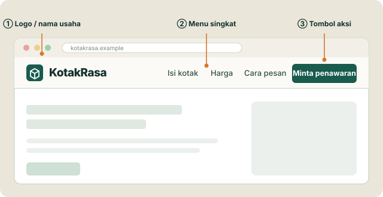

Web dasar · Pemula RPL SMK
Struktur marketing landing page
Cara menyusun halaman yang menjelaskan penawaranmu dan mengajak pengunjung melakukan satu hal.
Kenali bagiannya, pahami fungsinya, lalu buat sketsa (wireframe) buatanmu.
Snack box untuk rapat dan acara sekolah
Pilihan isi, jumlah, dan jadwal dalam satu penawaran.
Minta penawaranUsaha dan seluruh detail contoh bersifat fiktif.
Tujuan halaman
Website marketing dan landing page
Website biasa memperkenalkan usaha secara luas. Landing page dibuat untuk satu tujuan saja.
| Aspek | Homepage / beranda | Landing page kampanye |
|---|---|---|
| Fokus | Mengenalkan usaha secara umum. | Satu penawaran untuk satu kelompok pembaca. |
| Pilihan | Produk, profil, artikel, kontak. | Isi yang mendukung satu tujuan. |
| Contoh | Semua layanan katering KotakRasa. | Snack box untuk acara sekolah → minta penawaran. |
Di data analitik, “landing page” juga bisa berarti halaman pertama yang dibuka pengunjung. Di sini kita memakai arti untuk kampanye promosi.
Sebelum membuat layout
Tentukan tiga hal dulu
Panitia OSIS atau guru pengelola acara.
Snack box dengan pilihan isi dan jadwal kirim.
Mengisi formulir untuk meminta penawaran.
“Apa yang perlu diketahui panitia sebelum berani menghubungi kita?”
Jumlah minimum, isi kotak, harga, dan batas waktu pesan akan menentukan isi halaman.
KotakRasa adalah usaha fiktif; semua detailnya simulasi.
“Snack box acara sekolah”
Penawaran yang sesuai pesan promosi
Permintaan berhasil terkirim
Konversi artinya tujuan halaman tercapai, misalnya formulir terkirim. Sekadar klik tombol belum tentu termasuk.
Anatomi halaman
Peta bagian landing page
Header
“Ini usaha siapa?”
Menunjukkan nama usaha dan jalan pintas ke informasi penting.
Contoh: logo KotakRasa dan tautan menuju penawaran.
Klik nama bagian untuk melihat fungsinya. Urutan ini hanya contoh; bagian boleh digabung, dipindah, atau dibuang sesuai kebutuhan.
Bagian 1 · Header
Identitas dan arah
- Tampilkan nama atau logo usaha.
- Pilih menu yang membantu tujuan halaman.
- Kalau perlu, beri jalan pintas ke penawaran.
Untuk halaman yang fokus, menu boleh sangat singkat atau dihilangkan.
Contoh header sederhana

Pengunjung langsung mengenali usaha dan dapat menuju informasi yang dibutuhkan.
Menu dapat menuju bagian di halaman yang sama.
Bagian 2 · Hero
Penawaran utama di bagian pembuka
Contoh teks hero
Snack box untuk rapat dan acara sekolah
Pilih isi sesuai kebutuhan panitia. Mulai Rp15.000 per kotak, minimum 20 kotak.
Minta penawaranVisual pendamping: foto asli kotak terbuka agar isi dan porsinya terlihat.
Produk apa dan untuk siapa?
Tambahkan detail agar penawaran mudah dipahami.
Tunjukkan langkah berikutnya dan tampilkan produknya.
“Above the fold” = bagian yang terlihat sebelum layar digulir. Luasnya beda di tiap perangkat.
Latihan membaca pesan
Headline yang menjelaskan penawaran
Masih terlalu umum
“Selamat datang di website kami”
Belum menjelaskan produk, pembaca, atau alasan untuk lanjut membaca.
Lebih jelas
“Snack box untuk rapat dan acara sekolah”
Pengunjung langsung tahu produknya dan untuk siapa.
Pola latihan: produk / layanan + untuk siapa.
Contoh lain: “Laundry antar jemput untuk mahasiswa di sekitar kampus.” Tulis hanya janji yang benar-benar bisa kamu penuhi.
Bagian 3 · Masalah & manfaat
Hubungkan fitur dengan kebutuhan
Masalah panitia: mengatur anggaran, jumlah peserta, dan jadwal konsumsi. Jelaskan bagaimana produkmu membantu.
| Fitur: apa yang ada? | Manfaat: apa gunanya bagi panitia? |
|---|---|
| Pilihan isi kotak | Panitia dapat menyesuaikan isi dengan kebutuhan dan anggaran. |
| Kemasan per orang | Konsumsi lebih mudah dibagikan kepada peserta. |
| Label nama acara | Kotak lebih mudah dikenali saat ada beberapa acara bersamaan. |
Pertanyaan untuk siswa: “Website responsif” adalah fitur. Apa manfaatnya bagi pengunjung yang memakai HP?
Bagian 4 · Produk / layanan
Jelaskan yang akan diterima
- Tampilkan isi, ukuran, pilihan, atau cakupan layanan.
- Gunakan foto asli atau contoh hasil yang relevan.
- Sebutkan batasan yang bisa memengaruhi keputusan pembeli.
Untuk jasa pembuatan web, detailnya bisa berupa jumlah halaman, fitur, dan batas revisi.
Contoh detail produk · simulasi
Paket Acara Sekolah
Isi: 2 kudapan + 1 air mineral dalam satu kotak.
Pilihan: isi kotak disepakati sebelum pesanan dikonfirmasi.
Tanyakan: alergi atau pantangan bahan. Pastikan usahamu sanggup sebelum berjanji.
Bagian 5 · Cara kerja
Tunjukkan langkah setelah tertarik
Pengunjung perlu tahu apa yang terjadi setelah menekan tombol ajakan (CTA).
- Kirim kebutuhan acara
Panitia mengisi jumlah kotak, tanggal, dan kebutuhan isi.
- Terima dan sepakati penawaran
Usaha mengonfirmasi ketersediaan, rincian biaya, dan jadwal.
- Konfirmasi pesanan
Produksi dan pengiriman mengikuti ketentuan yang disetujui.
Bagian ini berguna kalau prosesnya belum dikenal pengunjung. Untuk penawaran yang sederhana, boleh digabung dengan bagian produk.
Bagian 6 · Bukti kepercayaan
Berikan alasan untuk percaya
Bukti membantu pengunjung menilai apakah janjimu masuk akal.
Belum punya pelanggan? Tampilkan contoh produk, proses kerja, dan identitas usaha yang benar.
Sertakan konteks yang relevan dan izin pemiliknya.
Perlihatkan produk yang benar-benar dibuat atau hasil pekerjaan.
Kontak, lokasi layanan, dan sertifikasi jika memang dimiliki.
Jangan membuat rating palsu, jumlah pelanggan karangan, atau memakai logo organisasi tanpa izin dan kerja sama yang nyata.
Bagian 7 · Penawaran / harga
Harga perlu konteks
Jelaskan apa yang termasuk, apa yang belum termasuk, dan syarat untuk mendapatkan penawaran.
- Gunakan satuan yang jelas: per kotak, per bulan, atau per proyek.
- Kalau harga bisa berubah, jelaskan cara menghitungnya.
- Pakai promo dan batas waktu hanya kalau memang benar.
Contoh penawaran · simulasi
Paket Acara Sekolah
Mulai Rp15.000 / kotak
2 kudapan + air mineral + kemasan.
Minimum 20 kotak · Pesan paling lambat H−3.
Ongkir belum termasuk. Harga akhir mengikuti isi dan lokasi yang disepakati.
CTA · Call to action / ajakan bertindak
Satu tujuan, CTA boleh diulang
CTA (call to action) adalah ajakan untuk melakukan langkah berikutnya. Letakkan saat pengunjung sudah cukup informasi.
Label belum menjelaskan hasil klik
“Klik di sini”
Pengunjung harus menebak apa yang akan terjadi.
Label sesuai tindakan
“Minta penawaran”
Membuka bagian formulir permintaan. CTA awal dan akhir menuju tujuan yang sama.
Satu tujuan tidak berarti hanya satu tombol. Tautan info tambahan tetap boleh ada kalau membantu.
<a href="#permintaan"> menuju formulir; <button type="submit"> mengirimnya.
Bagian 9 · CTA akhir / formulir
Permudah permintaan
- Minta data yang memang diperlukan saja.
- Berikan label, petunjuk, dan pesan kesalahan yang jelas.
- Jelaskan data dipakai untuk apa dan apa yang terjadi setelah terkirim.
Di situs nyata, pesan “berhasil terkirim” baru muncul setelah server menerima data.
Bagian 8 & 10 · Menjawab keraguan dan menutup halaman
FAQ dan footer punya tugas berbeda
FAQ: pertanyaan yang sering muncul
Pilih pertanyaan yang memengaruhi keputusan.
Berapa minimum pesanannya?
Dalam contoh ini, minimum 20 kotak.
Kapan paling lambat memesan?
Paling lambat H−3. Jadwal tetap perlu dikonfirmasi oleh usaha.
Apakah ongkir sudah termasuk?
Belum. Ongkir disepakati berdasarkan lokasi pengiriman.
Footer: informasi penutup
Identitas, kontak, wilayah layanan, serta akses ke kebijakan privasi dan ketentuan yang relevan.
Kontak usaha · Wilayah layanan
Kebijakan privasi · Ketentuan pemesanan
Contoh label informasi. Pada situs nyata, isi dan tautannya harus benar-benar tersedia.
FAQ biasanya diletakkan sebelum CTA akhir. Footer harus mudah ditemukan oleh pengunjung yang ingin mengecek identitas usaha.
Membaca dan bertindak di HP
Urutan isi tetap masuk akal
- Kolom yang berdampingan ditumpuk jadi satu kolom.
- Judul, detail penting, dan CTA tetap mudah ditemukan.
- Teks terbaca, tombol mudah disentuh, gambar tidak menutupi isi.
- Coba tombol dengan keyboard dan beri teks alternatif (alt) pada gambar penting.
Saat layar mengecil, kurangi kepadatan tata letak, tetapi pertahankan info yang dibutuhkan untuk memutuskan.
KotakRasa
Snack box untuk acara sekolah
Mulai Rp15.000 / kotak.
Minimum 20 kotak.
Isi mudah dipilih
2 kudapan + air mineral.
Pesan H−3
Jadwal dikonfirmasi bersama.
Menghubungkan konsep dengan kode
Bagian marketing dan elemen HTML
<header>…</header>
<main>
<section id="hero">
<h1>Snack box acara sekolah</h1>
<a href="#permintaan">Minta penawaran</a>
</section>
<section id="manfaat">…</section>
<section id="penawaran">…</section>
<section id="permintaan">
<h2>Minta penawaran</h2>
<form>…</form>
</section>
</main>
<footer>…</footer>header & footerPembuka identitas halaman dan informasi penutup.
main & sectionIsi utama dan kelompok topik yang punya judul.
h1, h2, formJudul halaman, judul bagian, dan isian permintaan.
Hero dan CTA adalah nama fungsi, bukan tag HTML. Potongan ini sengaja diringkas.
Mengevaluasi halaman
Kesalahan yang perlu diperbaiki
| Masalah | Dampak bagi pengunjung | Perbaikan |
|---|---|---|
| Hero hanya slogan | Tidak tahu apa yang ditawarkan. | Sebutkan produk dan untuk siapa. |
| CTA saling bersaing | Bingung harus memulai dari mana. | Tetapkan satu tindakan utama. |
| Harga tanpa syarat | Ragu terhadap biaya akhir. | Jelaskan satuan, isi, dan pengecualian. |
| Formulir terlalu panjang | Terlalu melelahkan untuk langkah awal. | Minta data yang penting saja dulu. |
Saat menilai desain teman: sebut bagian yang bermasalah, dampaknya, lalu satu saran perbaikan.
Cek pemahaman · 1 dari 2
Tujuan dan bagian pembuka
Cek pemahaman · 2 dari 2
Bukti dan langkah berikutnya
Praktik berpasangan
Buat wireframe landing page
Wireframe adalah sketsa susunan isi dan posisi elemen. Gunakan kertas atau alat desain yang tersedia.
Pilih usaha fiktif: snack box, laundry, atau kursus. Tulis pembaca, penawaran, dan satu tujuan utama di atas sketsa.
Tidak perlu akun media sosial, iklan berbayar, atau data pribadi asli.
Yang dikumpulkan
- Wireframe satu halaman dari header sampai footer.
- Headline, dua manfaat, dan detail penawaran.
- Rencana bukti yang benar, satu FAQ, dan CTA yang jelas.
- Sketsa versi HP dan alasan urutan bagiannya.
Tandai harga, kontak, dan bukti yang masih perkiraan. Kalau belum punya testimoni, sebutkan bukti lain yang akan disiapkan.
Ulasan teman & penilaian
Periksa struktur sebelum menghias
Checklist ulasan teman
- Saya tahu produk ini untuk siapa.
- Manfaat dan detail penawarannya jelas.
- Bukti serta syarat harga tidak menyesatkan.
- Saya tahu langkah setelah menekan CTA.
- Urutan di HP mudah diikuti.
Rubrik · total 100 poin
Beri nilai 0 sampai bobot maksimum untuk tiap kriteria, lalu jumlahkan. Tulis satu alasan dan satu saran perbaikan.
Refleksi
Susun isi untuk membantu keputusan
Pengunjung perlu paham penawaran, tahu apakah cocok untuknya, punya alasan untuk percaya, dan tahu cara melangkah.
Pilih satu bagian wireframe-mu. Pertanyaan pengunjung apa yang dijawab bagian itu?
Referensi pendalaman
- Unbounce · Konsep landing page kampanye
- Unbounce · Anatomi landing page
- Unbounce · Praktik desain landing page
- MDN · Struktur dokumen HTML
- W3C WAI · Label formulir
Materi ini disesuaikan untuk belajar. Susunan halaman tidak menjamin hasil. Semua contoh KotakRasa fiktif. Isi slide bisa dibuka offline; tautan referensi butuh internet.
Catatan untuk pengajar
Mulai dari brief, bedah peta bersama, lalu minta siswa menjelaskan fungsi bagian sebelum praktik. Kunci kuis: 1 B, 2 C, 3 A, 4 B. Jawaban diskusi fitur responsif: pengunjung HP lebih mudah membaca dan menggunakan halaman.